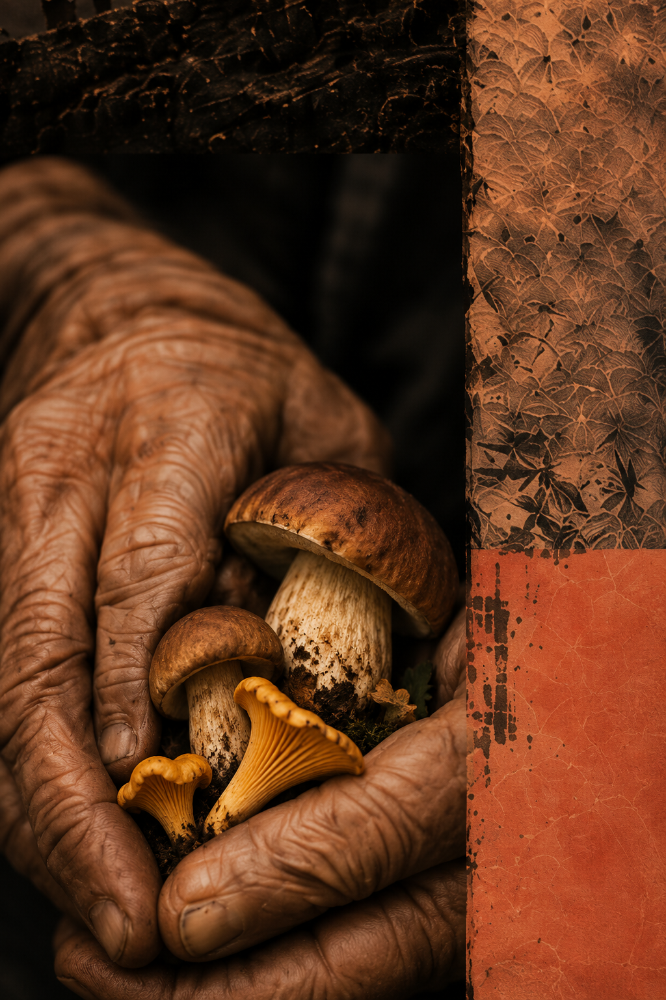

14 NOVIEMBRE 2026
Micología y plantas silvestres comestibles
14 NOVIEMBRE 2026 · SIERRA DE LA MOSCA, CÁCERES
IMPARTEN: Pazzis Díez Ortega (micología) y Martina Sánchez (plantas silvestres comestibles)
DURACIÓN: 8 horas, incluido el paseo micológico
